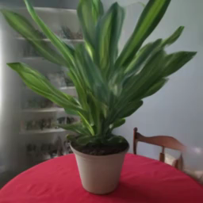

|
Noah Yi-Ting Hung I am a second-year PhD student in Mathematics and Statistics at Georgia State University, under the guidance of Professor Li-Hsiang Lin. My research focuses on the intersection of machine learning, image science, bioinformatics, and uncertainty control, with a particular interest in health information technology and model simplification. I earned my Master's in Joint Statistics and Computer Science from Purdue University, where I worked with Professor Qi Guo on a computer vision project. Prior to starting my PhD, I was a graduate research assistant under the supervision of Professor Henry Horng-Shing Lu, working on deep mixture density networks. I completed my undergraduate studies at National Taiwan University, working with Ku-Wei Liao on reliability research. During my time there, I received the 4th National Taiwan University Best Undergraduate Thesis Award and the Tomotake Takasaka Scholarship. |
{kind=link}
Publication |
|

|
Semi-Markov Process-Driven Maintenance Scheduling for Tainter Gate System Considering Multiple Limit States
Thedy, J., Liao, K., Hung, Y. JSHM, 2024 arXiv Using a multi-image diffusion model as a regularizer lets you recover high-quality radiance fields from just a handful of images. |
Miscellanea |

|
Graduate Student Instructor, CS188 Spring 2011
Graduate Student Instructor, CS188 Fall 2010 Figures, "Artificial Intelligence: A Modern Approach", 3rd Edition |
Talk and Poster |
|
|
Graduate Student Instructor, CS188 Spring 2011
Graduate Student Instructor, CS188 Fall 2010 Figures, "Artificial Intelligence: A Modern Approach", 3rd Edition |
|
Feel free to steal this website's source code. Do not scrape the HTML from this page itself, as it includes analytics tags that you do not want on your own website — use the github code instead. Also, consider using Leonid Keselman's Jekyll fork of this page. |